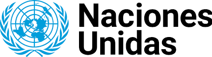

Principales Objetivos
- Por una mejor vida submarina
- -“Conservar y utilizar sosteniblemente los océanos, los mares y los recursos marinos para el desarrollo sostenible”
- - Mantener limpio su hogar.
-
Como ayudar:
- No tirar basura.
- No atacar su hogar.
- Respetar.
-
Interesante:
Menos de 10 por ciento del océano ha sido explorado por los seres humanos.
- El nivel medio del mar ha subido entre 10 y 25 centímetros en los últimos 100 años
- La temperatura media de los océanos es de 2 ºC.
- El 80 por ciento de toda la contaminación en los mares y océanos proviene de actividades realizadas en tierra.
-
¿Como reducir la contaminacion del agua?
- El agua es nuestro principal recurso natural. Es fuente de nuestro bienestar y un elemento esencial para la vida. Sin embargo, los altos niveles de contaminación en numerosos lugares del planeta provocan que, cada año, se produzcan más de 500.000 muertes a consecuencia del consumo de agua contaminada. Reducir la contaminación hídrica es uno de nuestros mayores desafíos.
-
Mantener la diversidad genética:
- Conservar diversidad genética de semillas, plantas y animales.
- Utilizar bancos de semillas y plantas diversificados.
- Promover acceso justo y equitativo a beneficios de recursos genéticos.